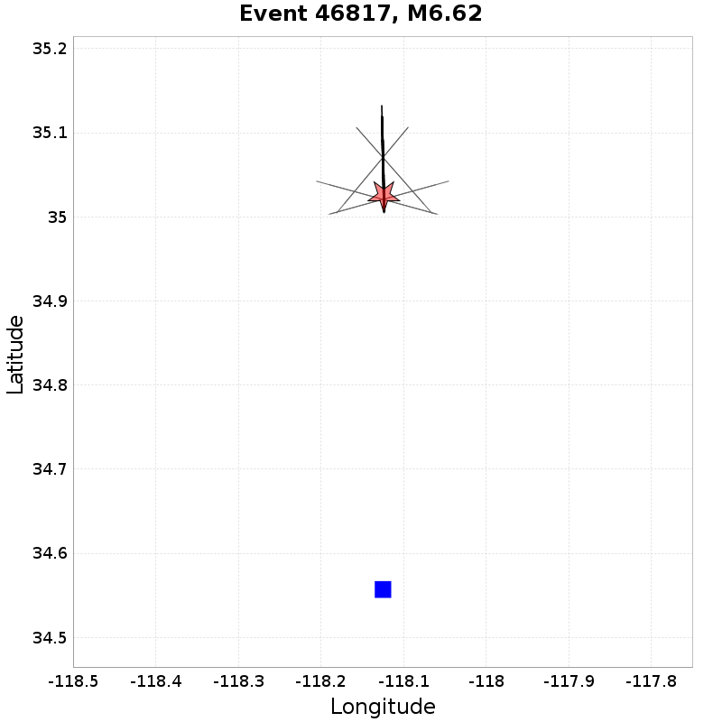
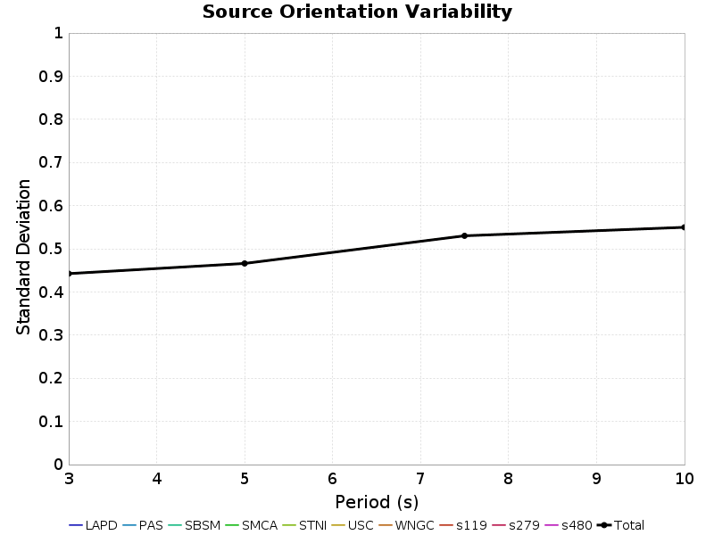
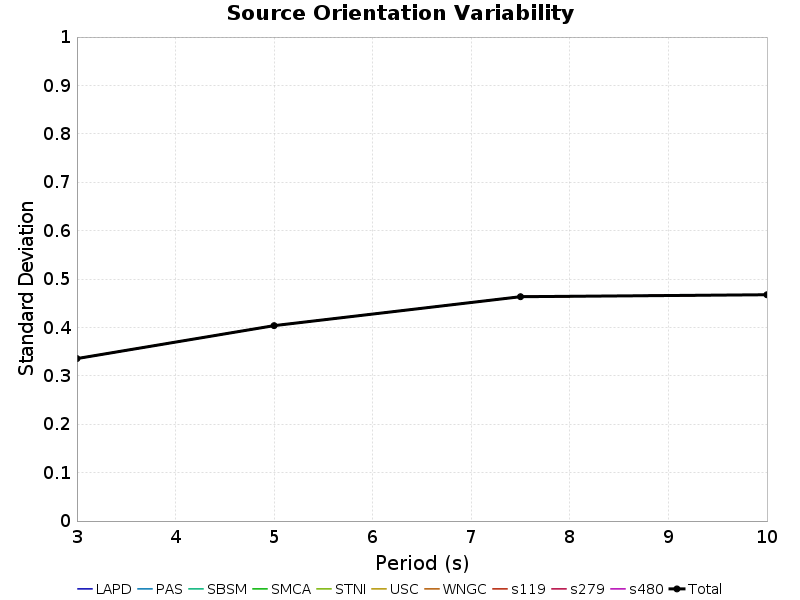

| Events | 100 |
|---|---|
| Sites | 10 |
| Source Rotation Azimuths | 36 |
| Site-To-Source Path Azimuths | 4 |
| Source-Site Distance[s] | 50.0 km |
| Total # Simulations | 144000 |
| Name | Location | Vs30 (m/s) | Z1.0 (km) | Z2.5 (km) |
|---|---|---|---|---|
| LAPD | 34.557, -118.125 | 863 | N/A | N/A |
| PAS | 34.148426, -118.17119 | 863 | N/A | N/A |
| SBSM | 34.064987, -117.29201 | 863 | N/A | N/A |
| SMCA | 34.00909, -118.48939 | 863 | N/A | N/A |
| STNI | 33.93088, -118.17881 | 863 | N/A | N/A |
| USC | 34.0192, -118.286 | 863 | N/A | N/A |
| WNGC | 34.041824, -118.0653 | 863 | N/A | N/A |
| s119 | 34.55314, -118.72826 | 863 | N/A | N/A |
| s279 | 34.37809, -118.34757 | 863 | N/A | N/A |
| s480 | 34.15755, -117.87389 | 863 | N/A | N/A |
Path variability is computed by spinning each rupture around each site, holding distance and relative rupture orientation constant. Here is an exmample with 5 rotations:
This is done separately for each site, rupture, distance, and any rupture rotations (about its centroid). This calculation uses 4 rotations for each such site/rupture pair, where residuals are computed (relative to the mean intensity) for each path. A total path standard devaiation is then computed from these path residuals for all ruptures (including centroid rotations) for a given site and distance. The "ALL SITES" standard deviation is computed from all residuals across all sites for a given distance.

| Site | 3s Std. Dev. | 3s Range | 5s Std. Dev. | 5s Range | 7.5s Std. Dev. | 7.5s Range | 10s Std. Dev. | 10s Range |
|---|---|---|---|---|---|---|---|---|
| LAPD | 0 | [-0.06 0.06] | 0 | [-0.03 0.05] | 0 | [-0.02 0.03] | 0 | [-0.02 0.02] |
| PAS | 0 | [-0.08 0.04] | 0 | [-0.04 0.03] | 0 | [-0.02 0.04] | 0 | [-0.01 0.03] |
| SBSM | 0 | [-0.11 0.07] | 0 | [-0.03 0.04] | 0 | [-0.02 0.02] | 0 | [-0.02 0.01] |
| SMCA | 0 | [-0.07 0.06] | 0 | [-0.03 0.04] | 0 | [-0.02 0.03] | 0 | [-0.02 0.02] |
| STNI | 0 | [-0.06 0.1] | 0 | [-0.04 0.05] | 0 | [-0.01 0.02] | 0 | [-0.01 0.02] |
| USC | 0 | [-0.09 0.13] | 0 | [-0.06 0.06] | 0 | [-0.03 0.03] | 0 | [-0.02 0.01] |
| WNGC | 0 | [-0.09 0.07] | 0 | [-0.04 0.03] | 0 | [-0.02 0.04] | 0 | [-0.02 0.02] |
| s119 | 0 | [-0.1 0.14] | 0 | [-0.07 0.04] | 0 | [-0.03 0.04] | 0 | [-0.03 0.02] |
| s279 | 0 | [-0.06 0.04] | 0 | [-0.03 0.03] | 0 | [-0.02 0.02] | 0 | [-0.01 0.02] |
| s480 | 0 | [-0.09 0.09] | 0 | [-0.04 0.05] | 0 | [-0.03 0.05] | 0 | [-0.05 0.02] |
| ALL SITES | 0 | [-0.11 0.14] | 0 | [-0.07 0.06] | 0 | [-0.03 0.05] | 0 | [-0.05 0.03] |
Source orientation variability is computed by spinning each rupture around its centroid, holding distance and path constant. Here is an exmample with 5 rotations:

This is done separately for each site, rupture, distance, and path. This calculation uses 36 centroid rotations for each rupture (for each site/distance/path), where residuals are computed (relative to the mean intensity) for each rupture orientation. A total rupture orientation standard devaiation is then computed from these residuals for all ruptures (including multiple paths) for a given site and distance. The "ALL SITES" standard deviation is computed from all residuals across all sites for a given distance.

| Site | 3s Std. Dev. | 3s Range | 5s Std. Dev. | 5s Range | 7.5s Std. Dev. | 7.5s Range | 10s Std. Dev. | 10s Range |
|---|---|---|---|---|---|---|---|---|
| LAPD | 0.44 | [-1.39 1.17] | 0.47 | [-1.42 1.33] | 0.53 | [-1.78 1.36] | 0.55 | [-1.68 1.28] |
| PAS | 0.44 | [-1.39 1.17] | 0.47 | [-1.42 1.33] | 0.53 | [-1.78 1.35] | 0.55 | [-1.68 1.28] |
| SBSM | 0.44 | [-1.4 1.17] | 0.47 | [-1.45 1.32] | 0.53 | [-1.78 1.35] | 0.55 | [-1.66 1.27] |
| SMCA | 0.44 | [-1.39 1.17] | 0.47 | [-1.42 1.33] | 0.53 | [-1.78 1.35] | 0.55 | [-1.68 1.28] |
| STNI | 0.44 | [-1.4 1.17] | 0.47 | [-1.42 1.33] | 0.53 | [-1.78 1.35] | 0.55 | [-1.67 1.28] |
| USC | 0.44 | [-1.39 1.17] | 0.47 | [-1.42 1.33] | 0.53 | [-1.78 1.35] | 0.55 | [-1.68 1.28] |
| WNGC | 0.44 | [-1.4 1.17] | 0.47 | [-1.42 1.33] | 0.53 | [-1.78 1.35] | 0.55 | [-1.67 1.28] |
| s119 | 0.44 | [-1.39 1.17] | 0.47 | [-1.42 1.33] | 0.53 | [-1.78 1.36] | 0.55 | [-1.68 1.28] |
| s279 | 0.44 | [-1.39 1.17] | 0.47 | [-1.42 1.33] | 0.53 | [-1.78 1.35] | 0.55 | [-1.68 1.28] |
| s480 | 0.44 | [-1.4 1.17] | 0.47 | [-1.43 1.33] | 0.53 | [-1.78 1.35] | 0.55 | [-1.67 1.28] |
| ALL SITES | 0.44 | [-1.4 1.17] | 0.47 | [-1.45 1.33] | 0.53 | [-1.78 1.36] | 0.55 | [-1.68 1.28] |
Source variability is computed by comparing ground motions for all ruptures, after they rotated/translated to the same orientation. Thus we are sampling the same path and same source-to-site azimuth. No effort is made to match hypocenters, so directivity may still influence.
This is done separately for each site, distance, source azimuth, and path. This calculation uses 100 ruptures (for each site/distance/sourceAz/path), where residuals are computed (relative to the mean intensity) for each path/orientation. A total standard devaiation is then computed from these residuals for all paths/azimuths/ruptures for a given site and distance. The "ALL SITES" standard deviation is computed from all residuals across all sites for a given distance.

| Site | 3s Std. Dev. | 3s Range | 5s Std. Dev. | 5s Range | 7.5s Std. Dev. | 7.5s Range | 10s Std. Dev. | 10s Range |
|---|---|---|---|---|---|---|---|---|
| LAPD | 0.34 | [-1.06 1.31] | 0.4 | [-1.23 1.12] | 0.46 | [-1.45 1.11] | 0.47 | [-1.52 1.05] |
| PAS | 0.34 | [-1.06 1.32] | 0.4 | [-1.23 1.12] | 0.46 | [-1.45 1.11] | 0.47 | [-1.52 1.05] |
| SBSM | 0.34 | [-1.05 1.32] | 0.4 | [-1.24 1.12] | 0.46 | [-1.45 1.11] | 0.47 | [-1.52 1.05] |
| SMCA | 0.34 | [-1.05 1.32] | 0.4 | [-1.23 1.12] | 0.46 | [-1.45 1.11] | 0.47 | [-1.52 1.05] |
| STNI | 0.34 | [-1.05 1.32] | 0.4 | [-1.24 1.12] | 0.46 | [-1.45 1.11] | 0.47 | [-1.52 1.05] |
| USC | 0.34 | [-1.05 1.32] | 0.4 | [-1.23 1.12] | 0.46 | [-1.45 1.11] | 0.47 | [-1.52 1.05] |
| WNGC | 0.34 | [-1.05 1.32] | 0.4 | [-1.24 1.12] | 0.46 | [-1.45 1.11] | 0.47 | [-1.52 1.05] |
| s119 | 0.34 | [-1.06 1.32] | 0.4 | [-1.23 1.12] | 0.46 | [-1.45 1.11] | 0.47 | [-1.52 1.05] |
| s279 | 0.34 | [-1.06 1.32] | 0.4 | [-1.23 1.12] | 0.46 | [-1.45 1.11] | 0.47 | [-1.52 1.05] |
| s480 | 0.34 | [-1.05 1.32] | 0.4 | [-1.24 1.12] | 0.46 | [-1.45 1.11] | 0.47 | [-1.52 1.05] |
| ALL SITES | 0.34 | [-1.06 1.32] | 0.4 | [-1.24 1.12] | 0.46 | [-1.45 1.11] | 0.47 | [-1.52 1.05] |